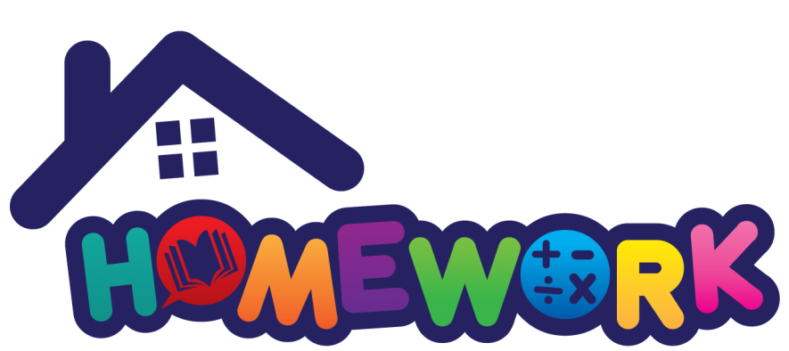
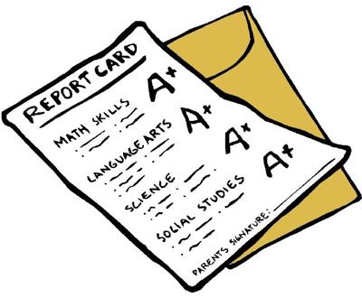

Learning made more fun, interactive and collaborative
About us
We are a group of developers from this organization aiming to develop applications to digitalize
the traditional ways, for better living.
Informal school application is one of them to digitalize school and provide 24/7 resource availability
to assist school children.
Parent Access
Once you are properly identified, a letter containing an access ID and password will be provided. Each
child will have a separate access ID. You will need to create an account before using Parent Access.
Instructions for using the Parent Access portal will be posted on this website.
Issues that require escalation will be handled by the school and central
support.
Homework

You can create homework assignments in seconds and share them instantly with your students.
Attendance
Track daily attendance by homeroom, period or subject. Easy to use interface to check off your
students.
Report Card

Report cards are fully customizable - you get to have your own grading criteria, grading flow,
report card format. You can print beautiful report cards and transcripts.